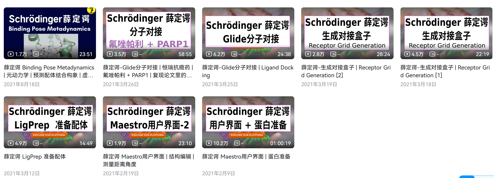
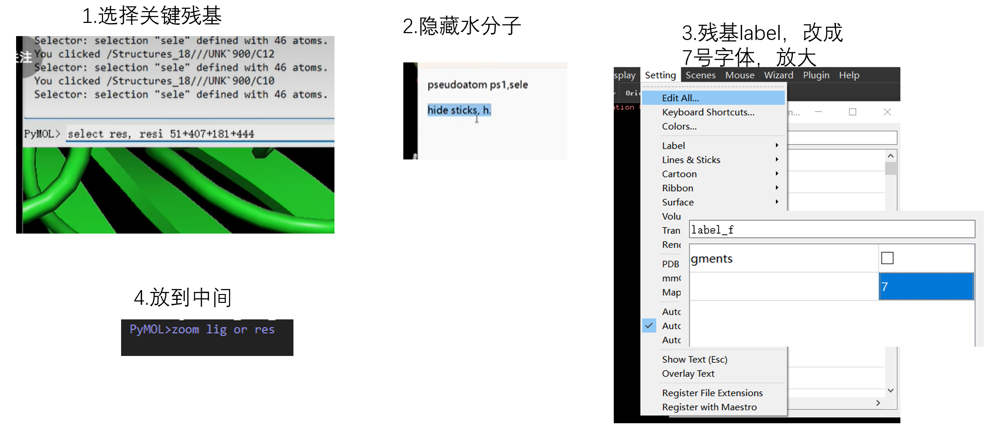
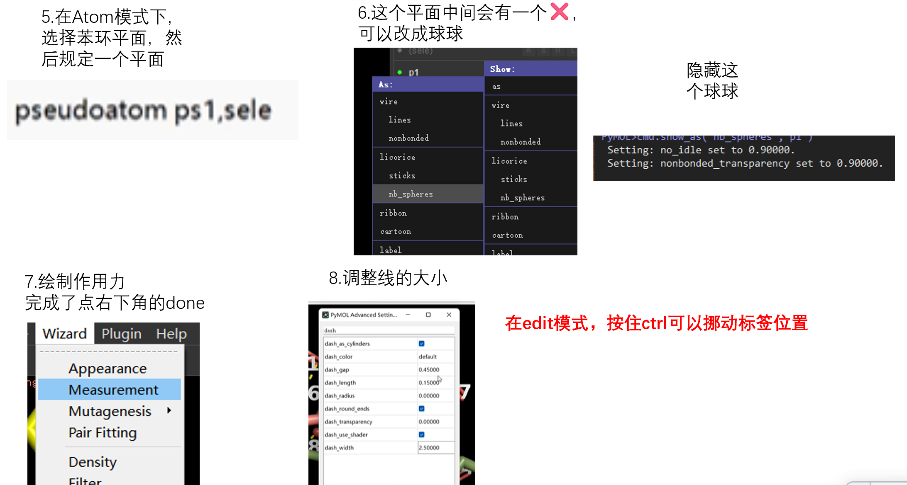
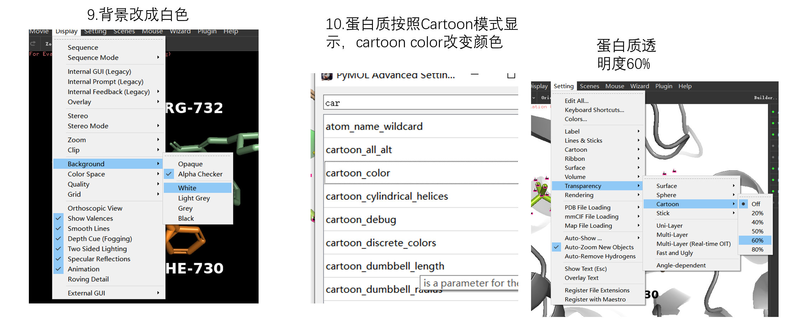
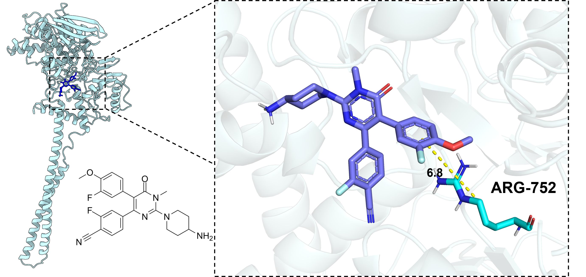
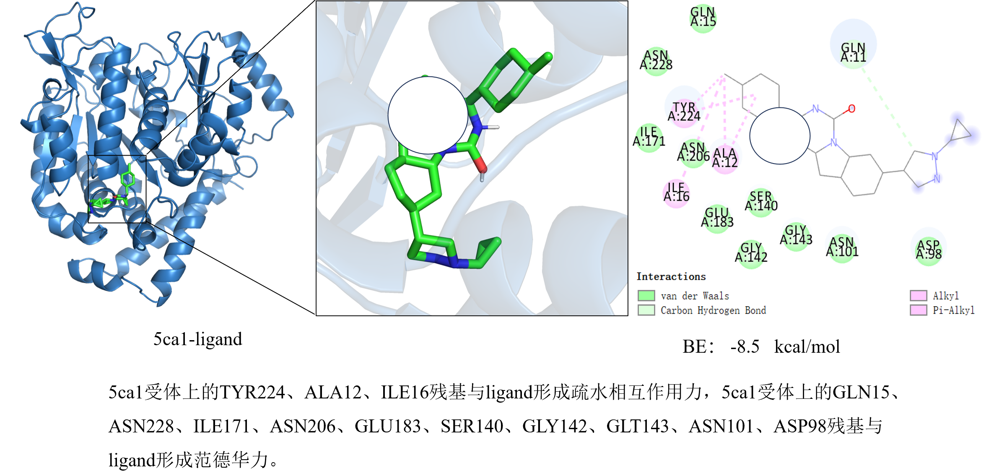

📘 一、分子对接教程资料
Schrödinger 软件分子对接学习资料，建议配合视频教程一起使用。
📕 分子对接——薛定谔
PDF 教程：包含分子对接相关的软件操作和学习内容。
推荐学习顺序：
下载 PDF 教程 ↓
在线阅读 PDF ↗
1. 熟悉 Maestro 软件界面
2. 蛋白质结构准备（Protein Preparation）
3. 配体准备（LigPrep）
4. 结合口袋与 Grid 生成
5. Glide 分子对接
6. 对接结果分析
🎬 二、视频教学中心
通过视频学习分子对接软件操作，结合课程图片和 PDF 教程进行系统学习。
📺 课程一：Schrödinger（薛定谔）分子对接教学
学习薛定谔软件的基本操作及分子对接流程。
如果视频无法在网页内播放，可以通过下面的链接进入 B 站观看。
前往 Bilibili 观看 ↗📚 薛定谔课程学习内容
以下图片展示本课程需要学习的具体内容和课程安排。

📺 课程二：分子对接视频进阶教学
分子对接后用Pymol进行可视化，作为补充学习资料。
如果视频无法在网页内播放，可以通过下面的链接进入 B 站观看。
前往 Bilibili 观看 ↗🧬 PyMOL 分子可视化过程展示
分子对接完成后，使用 PyMOL 对蛋白质结构、配体结合口袋及关键氨基酸残基进行可视化分析。

1

2

3
💻 三、分子对接常用代码库
整理科研中经常使用的 PyMOL 命令，点击复制即可使用。
1. 关键氨基酸残基选择
选择指定残基
select key_res, resi 359+379+547
选择指定链中的残基
select key_res, chain A and resi 359+379+547
2. 蛋白质结构显示
显示蛋白质卡通结构
show cartoon color cyan, polymer.protein
显示配体棒状结构
show sticks, organic color yellow, organic
3. 配体与关键残基颜色设置
配体与关键残基颜色设置
# 配体设置为绿色 util.cbag lig # 配体设置为黄色（可选） # util.cbay lig # 关键氨基酸残基设置为蓝色 util.cbac key_res
4. 氢键与距离分析
不显示非极性氢键
remove (elem H and neighbor elem C)
显示配体附近的极性相互作用
dist hbonds, organic, polymer.protein, mode=2 hide labels, hbonds
显示配体周围 5 Å 的残基
select nearby_res, byres (polymer.protein within 5 of organic) show sticks, nearby_res
更改连接键的显示宽度
set dash_radius, 0.1
ChimeraX常用（新手不用）
# 1. 设置白色背景 set bg white # 2. 开启黑色轮廓线 (核心命令！) graphics silhouettes true width 1.5 # 3. 设置柔和光照 (去除强烈阴影，使画面更扁平化) lighting soft
注意：
以上代码为 PyMOL 命令，不是 Schrödinger Maestro 命令。
不同蛋白质结构的链编号、残基编号和配体选择名称可能不同，使用前需要核对结构文件。
🖼️ 四、分子对接科研图片
用于展示蛋白质结构、配体结合口袋、关键氨基酸及分子相互作用。

蛋白质与配体结合
展示配体在蛋白质结合口袋中的位置。

分子相互作用
展示氢键及关键氨基酸残基。
🚀 五、后续学习内容
🔬 对接结果分析
结合能、关键氨基酸、氢键及疏水相互作用。
⚗️ 分子动力学模拟
后续拓展 RMSD、RMSF、氢键和结合稳定性分析。